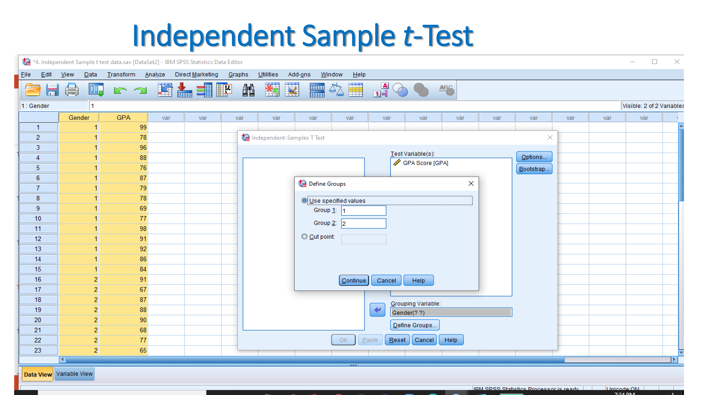

9 Testing of means
Testing of means: This analysis illustrates that whether there is difference between two groups or among three group and it is significant.
Two Assumptions:
- If data does not come from normal distribution or sample size is small meaning that less than 30 then nonparametric test.
- If data comes from large and normal distribution, then parametric test.
9.1 Non Parametric
Assumption:
When data are not normally distributed then non parametric test is done.
- Sample size is small (less than 30)
- Data are not from normally distributing
- When data is not normal any way
- Regular statistics can’t be done
9.2 Parametric
Assumptions:
If data comes from large and normal distribution, then parametric test.
Parametric Tests:
A. One sample test
B. Two sample test
- Independent sample ‘t’ test
- Paired sample ‘t’ test
C. More than two sample test (ANOVA)
9.2.1 One-sample t-test
- The One Sample t Test compares a sample mean to a hypothesized population mean to determine whether the two means are significantly different.
- The One Sample t Test determines whether the sample mean is statistically different from a known or hypothesized population mean. The One Sample t Test is a parametric test.
- This test is also known as: Single Sample t Test
- The variable used in this test is known as: Test variable
- In a One Sample t Test, the test variable is compared against a “test value”, which is a known or hypothesized value of the mean in the population.
The One Sample t-test determines whether the sample mean is statistically different from a known or hypothesized population mean.
The sample data must comply three conditions
1. Scale data
2. Normally distributed data
3. Only one sample data
Example of one-sample t-test
We assume that the hypothesized population mean is 3.
Null Hypothesis: The sample mean is not significantly different from the hypothesized population mean
Alternative Hypothesis: The sample mean is significantly different from the hypothesized population mean
If p (sig value) is less than 0.05, then we reject the null hypothesis.
Since the significant value less than 0.05 which means we reject the null hypothesis. It indicates that sample mean is significantly different from the hypothesized population mean.
9.2.2 Independent Sample t-Test
The Independent Samples t Test compares the means of two independent groups in order to determine whether there is statistical evidence that the associated population means are significantly different. The Independent Samples t Test is a parametric test.
Null hypothesis: There is no significant difference between male and female towards GPA score.
Alternate hypothesis: There is a significant difference between male and female towards GPA score.
After Importing your data set, and providing names to variables, click on:
ANALYZE → COMPARE MEANS → INDEPENDENT SAMPLES T TEST
T-TEST
- For TEST VARIABLE, Select the dependent variable (GPA)
- For GROUPING VARIABLE, Select the independent variable (Gender)


Since the significant value of P is less than 0.05 which is 0.011. It indicates that null hypothesis is rejected which refereeing that there is a significant difference between male and female for obtaining GPA score.

9.2.3 Paired Samples T -test.
- SPSS paired samples t-test is a procedure for testing whether the means of two metric variables are equal in same population. Both variables have been measured on the same cases.
- Although “paired samples” suggests that multiple samples are involved, there’s really only one sample and two variables.
- Below is the pre-test and post-test scores of a training program.
Null hypothesis: There is no significant difference between pretest score and post-test score.
Alternate hypothesis: There is a significant difference between pre-test score and post-test score.
After Importing your data set, and providing names to variables, click on:
ANALYZE → COMPARE MEANS → PAIRED SAMPLES T TEST
For PAIRED VARIABLES, Select the two dependent (response) variables (the analysis will be based on first variable minus second variable)
Since the sig value (p) is less than 0.05 which is 0.000 that means null hypothesis is rejected and alternate hypothesis is accepted. It indicates that there is a significant difference of training scores between pre-test and post-test.
9.2.4 One-way ANOVA
The one-way analysis of variance (ANOVA) is used to determine whether there are any statistically significant differences between the means of three or more independent (unrelated) groups.
Example of one-way ANOVA
There are three teaching method which are traditional, machine learning and both traditional & M.L method. The scores obtained by students under these three teaching method. Now, one-way ANOVA is used to determine whether there are any statistically significant differences among the scores obtained by these three methods.
The sig value for between groups is higher than 0.05 that indicates to accept null hypothesis. Similarly, pairwise result also showed insignificant.
9.2.5 Two-way ANOVA
A test that allows one to make comparisons between the means of three or more groups of data, where two independent variables are considered. Two-Way ANOVA is an extension to the one-way ANOVA.
Example of Two-way ANOVA
For example, family members, income, and expenditure are the three variables. Family members and income are the independent variables and nominal data. Expenditure is dependent variable and scale data. So, we will observe here;
1. Is there any significant differences of amount of monthly income and amount of monthly expenditure on shampoo purchase?
2. Is there any significant difference between number of family members in house and expenditure on shampoo purchase?
Null hypothesis 1: Amount of monthly expenditure on shampoo for different income do not differ
Null hypothesis 2: Amount of monthly expenditure on shampoo for different number of family members in house do not differ
Null hypothesis 3: Amount of monthly expenditure on shampoo for the interaction of income and number of family members do not differ
Since the income and family members with expenditure values are more than 0.05, therefore null hypothesis are accepted. However, for intercept null hypothesis is rejected as the p value is less than 0.05
9.2.6 One-way Repeated Measure ANOVA
One-Way Repeated-Measures ANOVA. Analysis of Variance (ANOVA) is a common and robust statistical test that you can use to compare the mean scores collected from different conditions or groups in an experiment.
Null Hypothesis: There is no significant difference among the three different teaching methods.
Alternative Hypothesis: There is a significant difference among the three different teaching methods.
Since the p-value is <.05. The null hypothesis is rejected. Therefore, we can say there is significant difference among the teaching methods.